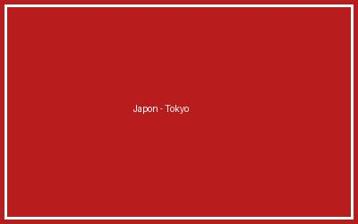
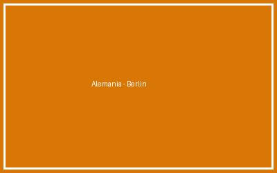
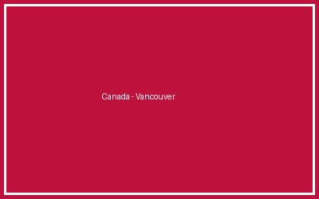
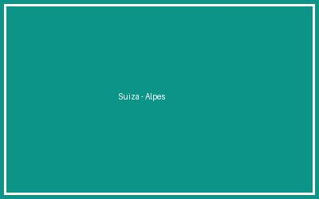
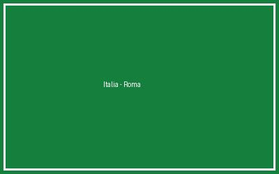

Tabla organizada en 3 columnas y 5 filas con los destinos turísticos, fotografías oficiales y enlaces a sus portales gubernamentales.
| Nombre del país que quieres visitar | Imagen de ese país a visitar | Link de la página oficial de ese país |
|---|---|---|
| 1. Japón |
 |
Visitar Portal Oficial de Turismo de Japón |
| 2. Alemania |
 |
Visitar Portal Oficial de Turismo de Alemania |
| 3. Canadá |
 |
Visitar Portal Oficial de Turismo de Canadá |
| 4. Suiza |
 |
Visitar Portal Oficial de Turismo de Suiza |
| 5. Italia |
 |
Visitar Portal Oficial de Turismo de Italia |